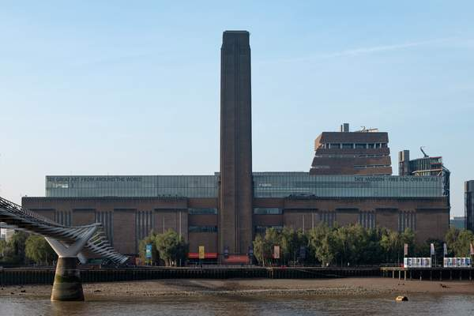
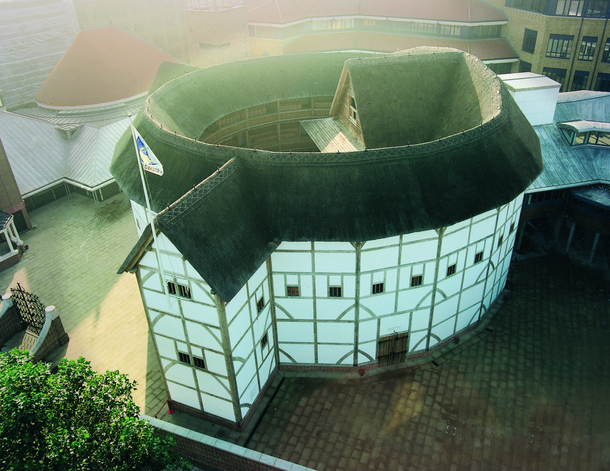
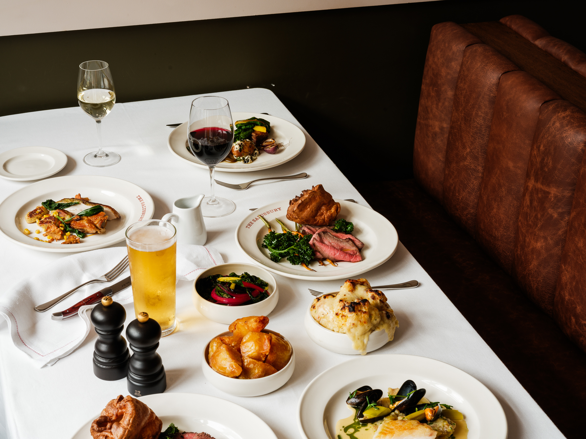
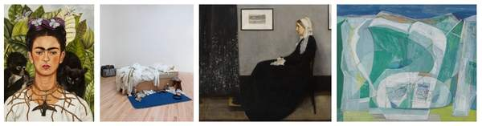

THE LONDON CONCIERGE
A folio prepared for a guest weekend — dinner, sights, and a working anchor.
London
Anchored on a Saturday-Night Michelin Table MAY · JUNE · MMXXVIA note before you set the date.
The weekend has four hard pins: the dinner, the time-locked exhibitions and shows, a small set of dates in late May–June to either chase or avoid, and one silent constraint — booking lead time — that ties everything else together.
Build the day around the dinner postcode, not the other way around. A two- or three-star tasting runs three to three-and-a-half hours, so dinner sets the geography for the whole evening. Confirm the postcode first; the rest of the folio assembles itself around it.
Two postcodes, two evenings.
If the table is Mayfair…
Bonheur · Hélène Darroze · Gymkhana · The Ritz
A nightcap is five minutes away at the Connaught Bar — No. 6 in the world, 2025.[1] Walk in. They keep a few stools for hotel guests; arrive close.
Pre-dinner: a Berkeley Square wander, the Royal Academy's late hours, or Bond Street windows after closing. No tube; no taxi.
Itinerary — "Mayfair Saturday": 18:00 stroll · 19:30 table · 23:00 Connaught Bar · walk to the hotel.

If the table is South of the river…
Restaurant Story · Trivet
The river path is the spine. After dinner, walk westward toward Lyaness at Sea Containers for a nightcap.[2]
Pre-dinner: Tate Modern stays open until 22:00 Friday & Saturday, free permanent collection.[3] Or a Globe matinee at zero extra travel cost.[4]
Itinerary — "Bankside Saturday": 14:00 Globe matinee · 17:30 Tate late · 19:30 table · 23:00 Lyaness.
Three dates worth marking.
The only major weekend-spanning tech event in 2026, at Convene Sancroft, a walk from most central restaurants.[5] The clean way to bookend a Saturday Michelin table with a working anchor.
The London Tech Week megacluster makes the whole week noisier.[7] The free fringe is the cheapest way in — useful for a Jun 6–7 or Jun 13–14 weekend that brackets it without the £2,699 delegate badge.[8]
The King's Birthday Parade closes central London with a 13:00 RAF flypast.[6] Morning sights, museums on the Mall, any pre-dinner Westminster wander — all off the table. Avoid unless you specifically want the parade.
A footnote on weekends: Jun 6–7 gives you PyData & Saturday dinner with one ticket. Jun 13–14 brackets the parade quietly — central streets reopen for Sunday lunch.
What we hold for you, & on whose clock.
A few sights in plate.



The London you'd plan for in autumn…
Dinner by Heston (★★) closes January 2027 after the Mandarin Oriental lease ends.[14] A May or June table is one of the last windows.
V&A East opened in Stratford this spring — the newer half of the V&A, worth the Elizabeth Line journey.[15]

The Tate stacks Emin, Julio Le Parc and Frida Kahlo in an eight-week run from mid-June.[16]
The sharpest decision left: confirm the dinner postcode first, then assemble the rest of the weekend to walk to it.
If a deeper read is wanted.
Things to do in London
Sights worth your time, current exhibitions, June events, day trips, and where to drink.
Michelin 2 & 3-star Restaurants
All six 3-star and sixteen 2-star tables in the 2026 guide, with a pick-by-scenario guide.
IT Conferences & Tech Events
Time the weekend around Jun 5–7 for PyData; or thread the Jun 8–12 Tech Week orbit.
Bon appétit, & safe travels.
Should the table need re-anchoring, the desk is open. The folio holds — only the postcode is contingent.